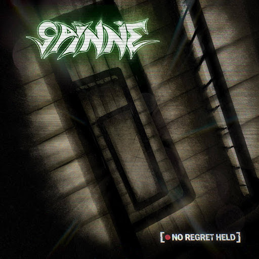
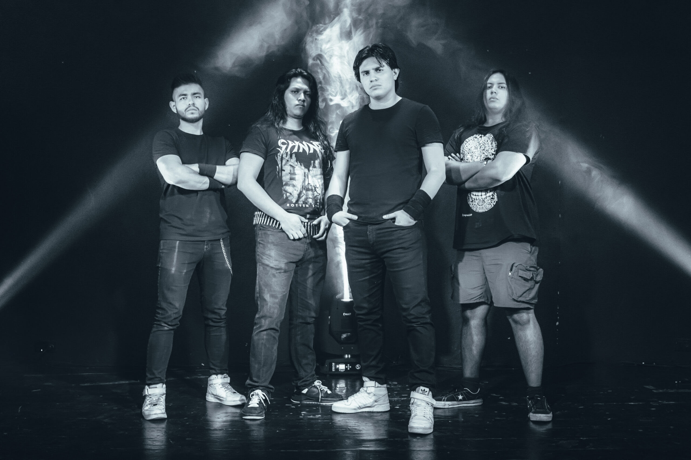

SPINNE: EL SONIDO
REC DE LA VIEJA ESCUELA

SPINNE, la agrupación mexicana de Metal, sorprende con el lanzamiento de su nuevo single “No Regret Held”. Esta pieza es el primer adelanto de su próximo material discográfico larga duración, previsto para ser editado hacia finales de 2026.
El single es un homenaje directo a la película REC (2007). Tanto la letra como el videoclip están llenos de referencias en fotografía, color y vibra al formato “Found Footage”. Producido de manera independiente, el video abraza la crudeza de lo visual.

CRUDEZA DE LOS 80'S Y 90'S
Spinne tiene un objetivo claro: generar nostalgia. En un 2026 donde muchos sonidos tienden a la homogeneidad, la banda se atreve a traer de regreso la crudeza del Thrash y Groove de la vieja escuela, influenciados por gigantes como Xentrix y Metallica.
HITOS DE LA ARAÑA (SPINNE)
- EXODUS: Acto soporte en el Circo Volador (2022).
- INTEL: Mencionados en la revista Metal Hammer.
- RADIO: Emitidos en 89FM Brasil por Andreas Kisser.
- PRÓXIMAMENTE: Gira por Colombia (Mayo 2026).
Fundada en 2019 por Emiliano Saucedo y Ross Valencia, la banda consolidó su formación con Aldo López y Daniel Zamora. Su nombre, que significa "Araña" en alemán, refleja la dualidad agresiva y técnica de su sonido.
